AI for Everyone, in plain words
Free AI tools for everyone are the ones you can use without writing code: voice typing, a private AI chat on your own computer, notes you own and apps that keep your computer tidy. Most are open source, with no subscription and no tracking. Here are the ones we'd start with.
What free AI tools do for everyday life
Type with your voice. Handy is a free offline voice typing app. Press a key, talk, and your words appear in any app on Mac, Windows or Linux. Your voice is turned into text on your own computer, per the Handy README. You download a speech model once before it works.
A private AI chat, no graphics card. Colibri runs AI models on a normal processor. The smallest model starts at 8 GB of memory and 22 GB of free disk. After the download, the model runs on your own machine.
An assistant in your chat apps. OpenClaw lives in WhatsApp, Telegram, iMessage, Discord and 20+ more chats. Its memory and settings stay on your computer. A nonprofit, the OpenClaw Foundation, looks after it.
Notes you fully own. Tolaria is a free offline notes app. Each note is a plain file, every change is saved, and there's no account.
Keep your Mac tidy. PureMac clears junk and fully uninstalls apps, with no fake "your Mac is at risk" alarms. Mole does five cleanup jobs from Terminal, and --dry-run shows what it would remove first. Thaw hides menu bar clutter, which helps on MacBooks with a notch.
Turn any website into an app. Pake makes a small desktop app from a site with one command. The Pake README says installers are typically under 10 MB, and ready-made apps exist for ChatGPT, Gemini and more.
How to pick
Start with the one that fixes a real annoyance today. If you type a lot, try Handy. If you want AI without sending your chats to a company, try Colibri. Be careful with cleanup apps: some steps delete files for good, so review before you click. Each guide has plain install steps and a ready prompt you can paste into Claude or Codex.
The newest AI news for everyone shows up in the list on this page, and the AI news for October 2026 has the month so far.
Free AI tools for Everyone

VoiceStudio: Free ElevenLabs Alternative
Clone a voice, dub videos and turn text into speech on your own Mac, Windows or Linux computer.

Folia: Free Animated Lyrics Music Player
Folia is a free animated lyrics music player that shows full-screen moving lyrics for your local music, Navidrome and more.
net-merge: Combine Wi-Fi and Phone Internet, Free
net-merge is a free app to use two internet connections at once, like Wi-Fi plus a phone hotspot, on Windows, Mac and Linux.

REA: Reverse Engineer Anything With Your AI Agent
REA (Reverse Engineer Anything) lets an AI agent look inside an app and explain how a feature works, with proof.

PureMac: Free CleanMyMac Alternative, No Subscription
It clears junk, fully uninstalls apps and finds duplicates, with no subscription, no tracking and no scare tactics.
Strata: Run Big Local AI on a Gaming PC, Free
It sets up a large Qwen model, so your chats never leave your computer.
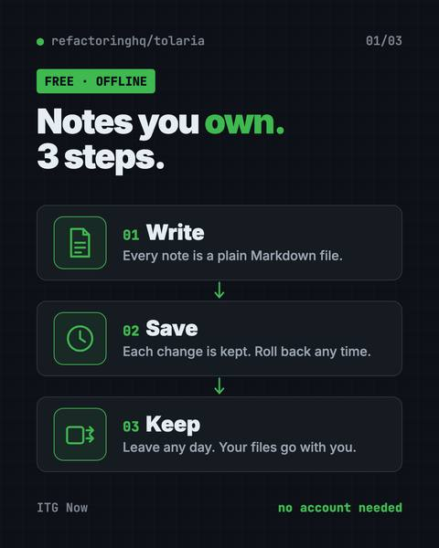
Tolaria: A Free Offline Notes App You Fully Own
Tolaria is a free offline notes app for Mac, Windows and Linux.
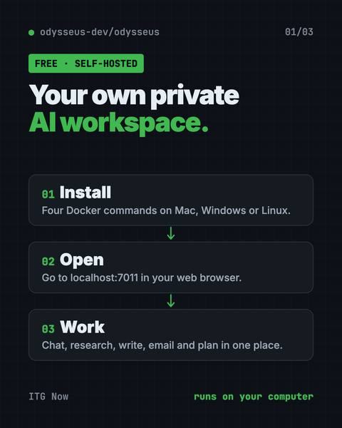
Odysseus: Free Self-Hosted AI Workspace
Odysseus is a free self-hosted AI workspace for chat, deep research, documents, email, notes and calendar.
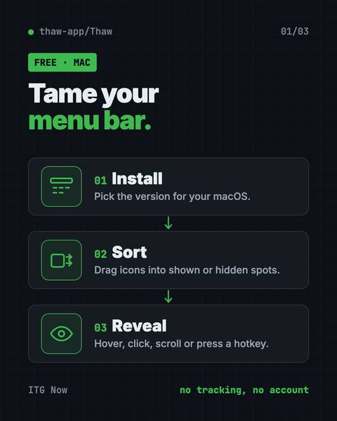
Thaw: Free Mac Menu Bar Manager, No Tracking
Thaw is a free Mac menu bar manager that hides, sorts and styles the icons at the top of your screen.
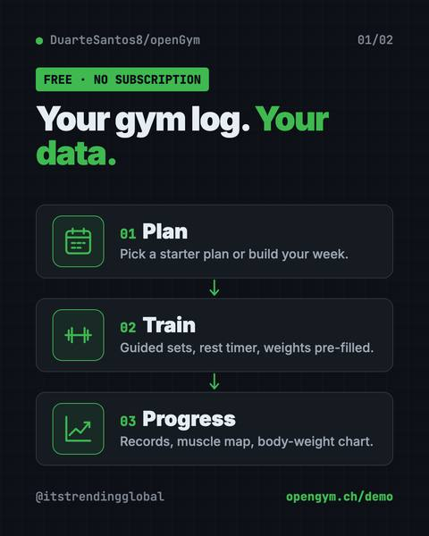
openGym: Free Workout Tracker App With No Subscription
Plan routines, follow guided sessions with 5,600+ exercises, and log weight.
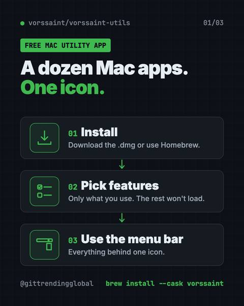
Vorssaint Utils: Free Mac Utility App for Menu Bar
Per-app volume, window snapping, clipboard history, a system monitor and an uninstaller behind one menu bar icon.
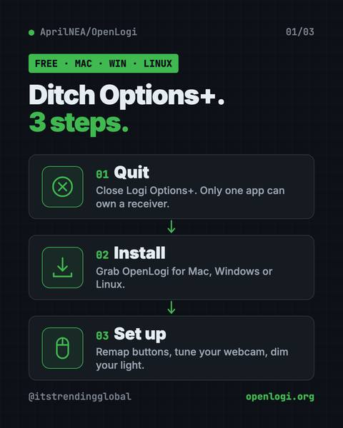
OpenLogi: Free Logitech Options+ Alternative
Remap mouse buttons, tune your webcam and control Litra lights on Mac, Windows and Linux.
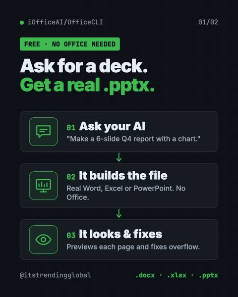
OfficeCLI: Free AI for Word, Excel and PowerPoint Files
It lets AI helpers create, read and edit real Office files, with no Office install needed.
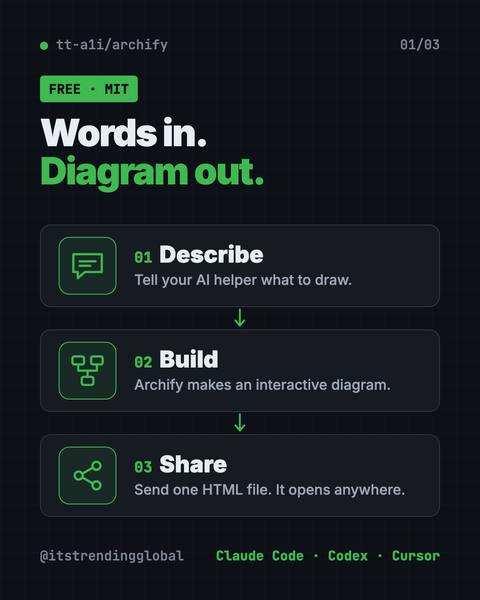
Archify: Free AI Diagram Generator for Claude and Codex
Describe an idea, plan or codebase to Claude Code or Codex and get an interactive diagram as one shareable web page.
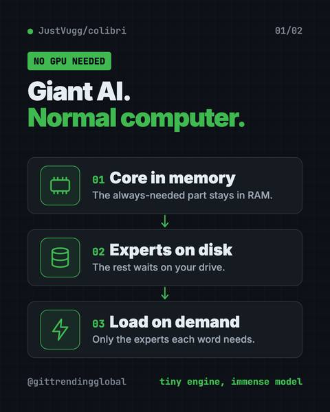
Colibri: Run Large AI Models Locally Without a GPU
Colibri is a free tool to run large AI models locally on the computer you already own.
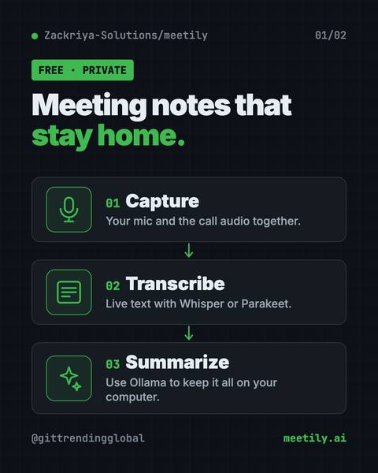
Meetily: Free AI Meeting Note Taker That Stays Private
It transcribes your calls live and writes summaries on your own computer, so recordings never have to leave it.
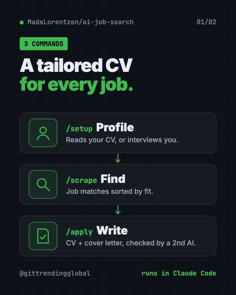
AI Job Search: Tailor Your CV With AI for Every Job
It scores postings, writes cover letters and builds interview prep packs on your computer.
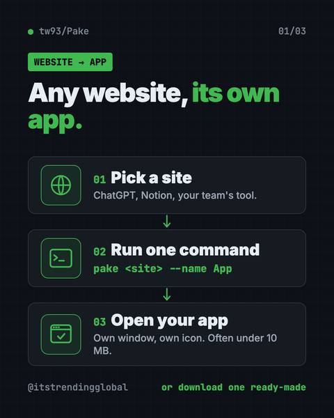
Pake: Turn Any Website Into a Desktop App, Free
Pake lets you turn any website into a desktop app with one command.
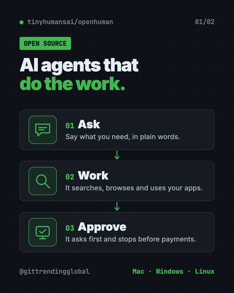
OpenHuman: Open Source AI Agent App That Runs Lean
OpenHuman is an open source AI agent app for Mac, Windows and Linux.
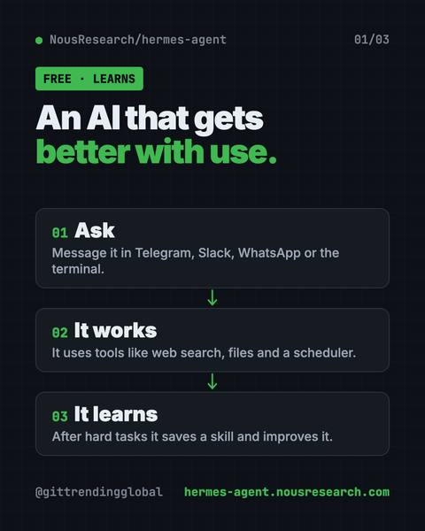
Hermes Agent: Free Self-Improving AI Agent
It remembers you, learns new skills, and chats with you on Telegram, Slack or WhatsApp.
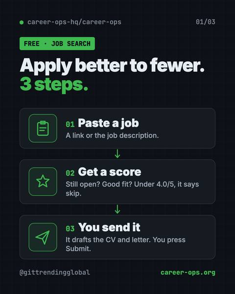
Career-Ops: Free AI Job Search Tool That Says Skip
It checks each job against your CV, tells you when to skip, and drafts tailored CVs and cover letters.
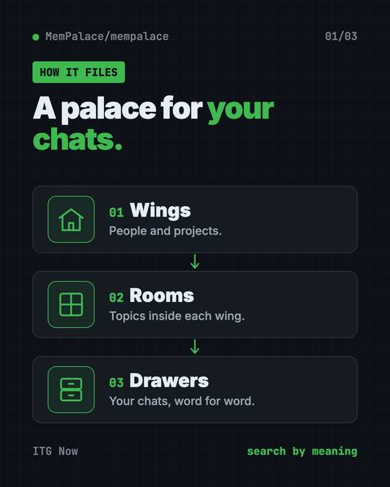
MemPalace: Free AI Memory for Claude Code, Stored Locally
It saves your chats word for word on your own computer and finds the right one later.
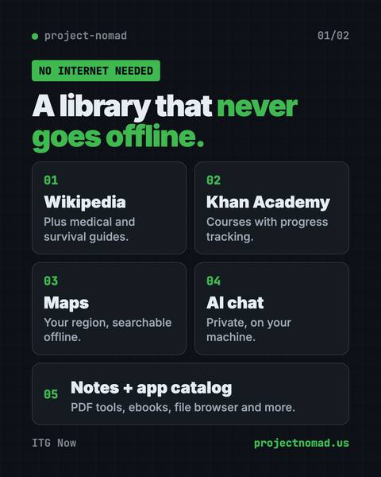
Project NOMAD: Free Offline Knowledge Server
Project NOMAD is a free offline knowledge server with Wikipedia, medical guides, Khan Academy courses, maps and a local AI that work with no internet.
nanobot: Free Self-Hosted AI Assistant You Own
Run it on your own computer, then chat in your browser, Telegram, Slack, Discord or email.
World Monitor: A Free Live World News Map With AI Briefs
It puts global news, markets and events on one interactive globe, with short AI-written news briefs.
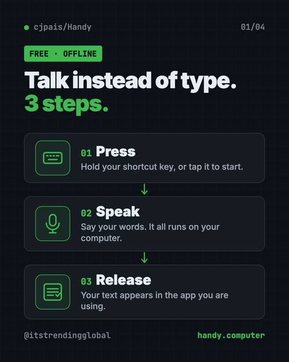
Handy: Free Offline Voice Typing App
Press a key, talk, and your words appear in any app on Mac, Windows or Linux.
Latest AI news for Everyone
The newest AI news. Each one opens our story page with its sources.
- GitHub · GitHub rebuilds Git storage for AI agent trafficNew design lets writes to different branches proceed independently, with object storage as source of truth.
- Recursive · Recursive releases open-weight coding model built mostly by AIFlint is Recursive's first model. Wired says its AI system automated most of the build; benchmarks beat similar-size models.
- OpenAI · OpenAI Codex Security helps find two critical PHP flawsBoth bugs score 9.2 and need no login. Patches were ready before attackers could use them.
- Monday.com · Survey: AI makes managing harder for managersNielsen survey for Monday.com: over half of senior leaders say judging employees' work got harder with AI.
- CrowdStrike · CrowdStrike: hackers bypass AI guardrails with agentic attacksFour new hacker groups used Claude and DeepSeek models, framing attacks as authorized security tests.
- NVIDIA · NVIDIA releases Kumo Forecast time-series modelPretrained Transformer forecaster that retrieves similar historical patterns and explains its predictions. About 340 million parameters.
AI news and top lists

Trending GitHub Repos October 2026: The Top 5 So Far
The trending GitHub repos of October 2026 so far: a free Photoshop-style editor, an AI art studio, a big AI model for gaming PCs and more, explained.

AI News October 2026: A Reality Check Before the IPOs
ChatGPT gets visual, OpenAI's revenue shakes stocks, AI agents misbehave, Meta's Muse Wonder and Apple's $299 HomeView arrive.

How AI Is Changing Industries in 2026: A Plain Guide
How AI is changing industries in 2026, sorted by field: jobs, finance, health, schools, marketing, law, creators and developers, with sources for every fact.

Trending GitHub Repos This Week, Oct 5 2026: The Top 5
Trending GitHub repos this week Oct 5 2026: Matt Pocock's skills, the openGym workout tracker, e2e testing, HyperFrames video and claude-mem memory.

GitHub Trending September 28, 2026: Hindsight and Paperclip
GitHub trending September 28 2026: Hindsight, Paperclip, NVIDIA's OpenShell and a free 542-lesson AI course, with setup steps for each.
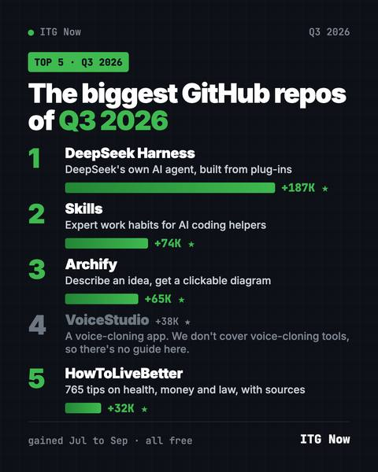
Best GitHub Repos Q3 2026: The 5 Biggest of the Quarter
The best GitHub repos of Q3 2026 (July to September): DeepSeek's AI agent, AI diagrams, expert coding skills and a sourced life guide, explained simply.

AI News Recap Q3 2026: 5 Stories That Changed Everything
OpenAI test models hack Hugging Face, Claude Opus 5 cuts prices, Gemini hits 1 billion users, GPT-6 Astra and Nvidia's big deal.
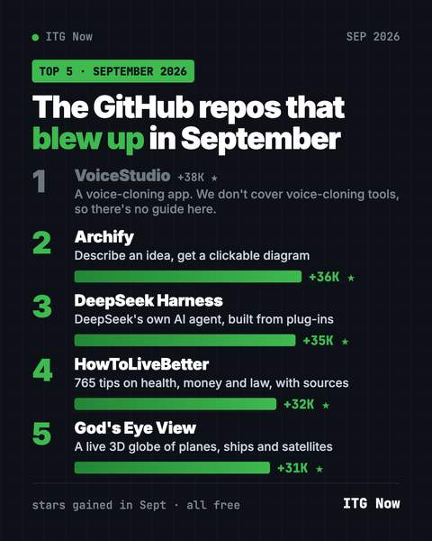
Best GitHub Repos of September 2026 (Free AI Tools)
The best GitHub repos of September 2026: free tools for AI diagrams, an AI agent, sourced life advice and a live 3D globe, explained simply.
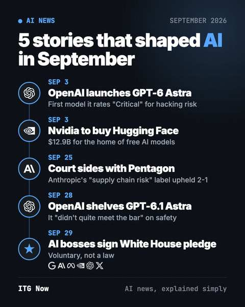
AI News September 2026: The 5 Biggest Stories
GPT-6 Astra, Nvidia buys Hugging Face, Anthropic loses in court, OpenAI shelves a model and AI bosses sign a White House pledge.
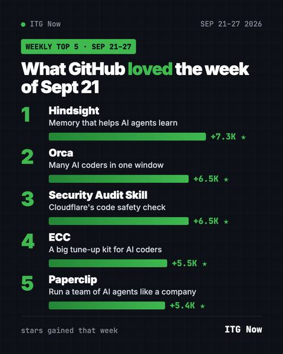
Trending GitHub Repos Sept 21, 2026: AI Memory and Safety
Trending GitHub repos Sept 21 2026: Hindsight AI memory, Orca, Cloudflare's security audit skill, ECC and Paperclip, explained for non-coders.
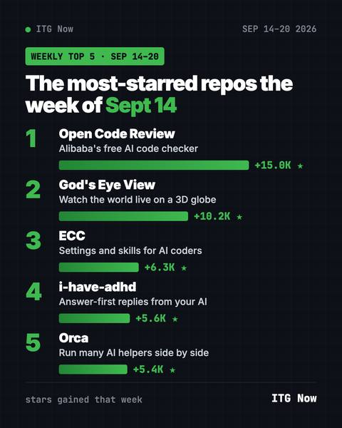
Most Starred GitHub Repos Sept 14, 2026: Alibaba Leads
Most starred GitHub repos Sept 14 2026: Alibaba's Open Code Review, God's Eye View, ECC, i-have-adhd and Orca, with simple install steps for each.
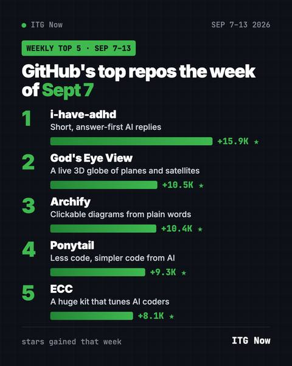
GitHub Trending This Week, Sept 7 2026: i-have-adhd Wins
GitHub trending this week Sept 7 2026: i-have-adhd, God's Eye View's live 3D globe, Archify, Ponytail and ECC, with setup steps anyone can follow.
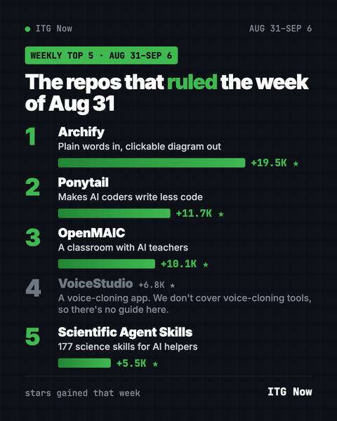
Trending GitHub Projects August 31, 2026: The Top 5
Trending GitHub projects August 31 2026: Archify, Ponytail, the OpenMAIC AI classroom and 177 science skills for AI helpers, explained in plain English.
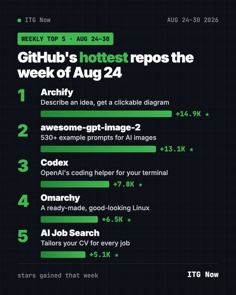
GitHub Trending Repos Aug 24, 2026: Archify, Codex and More
GitHub trending repos Aug 24 2026: Archify diagrams, 530+ GPT image prompts, OpenAI Codex, the Omarchy Linux setup and an AI job search helper.
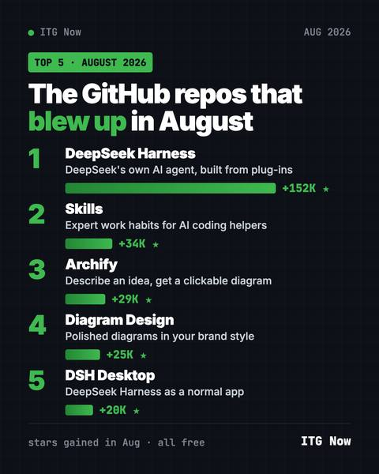
Best GitHub Repos of August 2026 (Free AI Tools)
The best GitHub repos of August 2026: DeepSeek's record-breaking AI agent, its desktop app, two AI diagram makers and expert coding skills, explained.
AI News August 2026: Governments Start Testing AI
the EU and White House gain ways to test AI, Gemini hits 1 billion users, Nvidia backs $105B for OpenAI, and ChatGPT ads pass $1B.
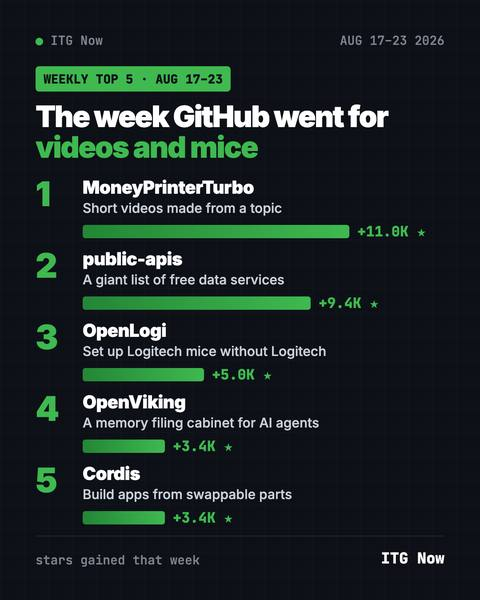
Top GitHub Repos Aug 17, 2026: Videos, Mice and Free APIs
Top GitHub repos Aug 17 2026: MoneyPrinterTurbo makes short videos, public-apis lists free data, OpenLogi frees your Logitech mouse, plus 2 more.
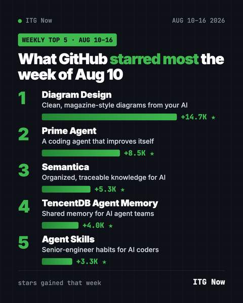
GitHub Trending August 10, 2026: The Week's 5 Top Repos
GitHub trending August 10 2026: Diagram Design, Prime Agent, Semantica, TencentDB Agent Memory and Agent Skills, with install steps in plain English.
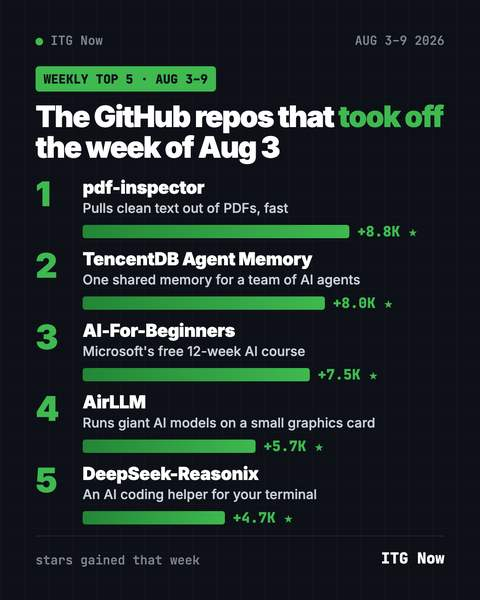
Trending GitHub Repos This Week: Aug 3, 2026 Top 5
Trending GitHub repos this week Aug 3 2026: a fast PDF reader, shared AI memory, Microsoft's free AI course, AirLLM and Reasonix, explained simply.
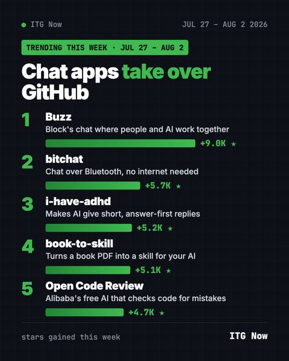
GitHub Trending Repos the Week of July 27, 2026
The GitHub trending repos the week of July 27, 2026: Block's Buzz, offline chat app bitchat, i-have-adhd, book-to-skill and Alibaba's Open Code Review.
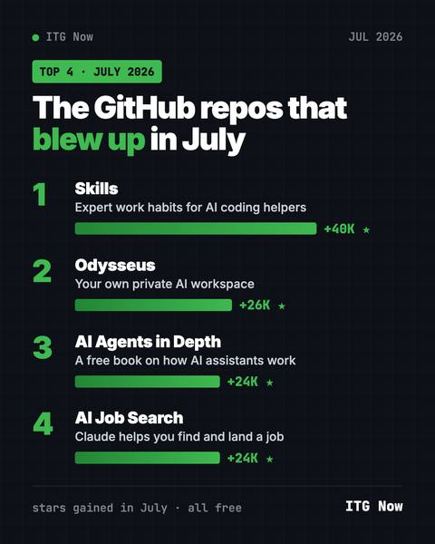
Best GitHub Repos of July 2026 (Free AI Tools)
The best GitHub repos of July 2026: free AI coding skills, a private AI workspace, a free book on AI agents, and a job hunt helper.
AI News July 2026: The AI That Broke Out of Its Box
OpenAI test models hacked Hugging Face, GPT-5.6 and Claude Opus 5 launched, and the EU made Google open Android to AI rivals.
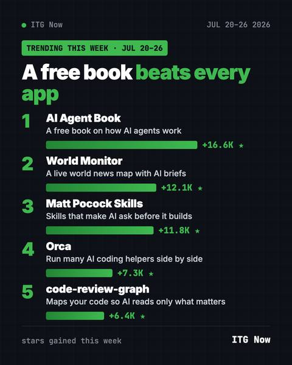
Top Trending GitHub Repos July 20-26, 2026
The top trending GitHub repos July 20-26, 2026: a free book on AI agents, World Monitor, Matt Pocock's skills, Orca and code-review-graph, explained simply.
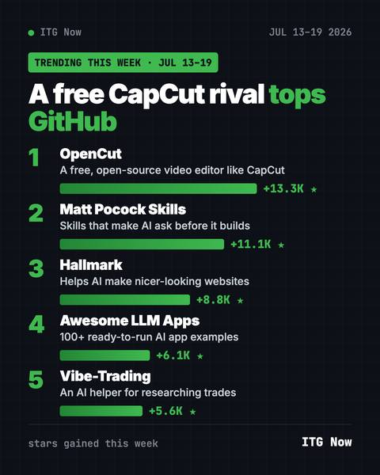
GitHub Trending the Week of July 13, 2026: OpenCut Wins
GitHub trending the week of July 13, 2026: free CapCut rival OpenCut, Matt Pocock's skills, Hallmark, Awesome LLM Apps and Vibe-Trading, explained simply.
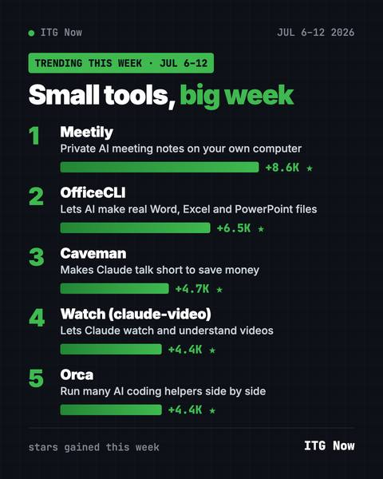
Trending GitHub Repos July 6-12, 2026: Meetily and More
The trending GitHub repos July 6-12, 2026: a private AI note taker, AI for Office files, Caveman, a video-watching skill for Claude and the Orca app.
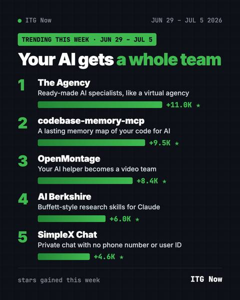
Best GitHub Repos the Week of June 29, 2026
The best GitHub repos the week of June 29, 2026: a ready-made AI agency, a code memory tool, OpenMontage, a Buffett-style research kit and SimpleX Chat.
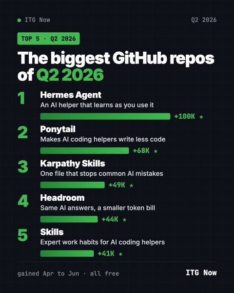
Best GitHub Repos Q2 2026: The 5 Biggest of the Quarter
The best GitHub repos of Q2 2026 (April to June): five free tools that made AI helpers smarter, simpler and cheaper, explained in plain words.
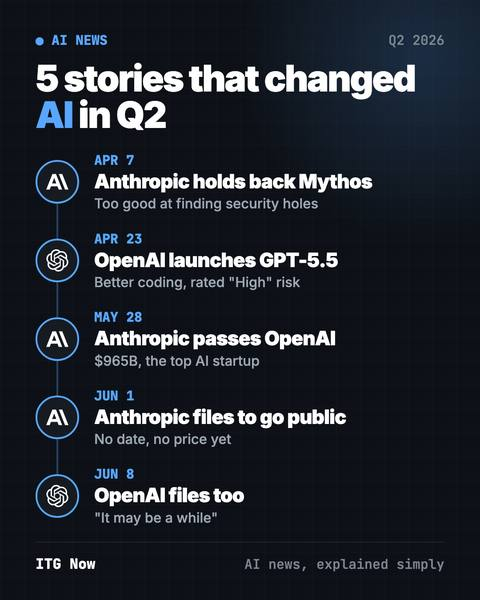
Biggest AI News Q2 2026: 5 Stories That Changed Everything
The biggest AI news Q2 2026: Anthropic holds back Mythos, GPT-5.5 arrives, Anthropic passes OpenAI in value, and both file to go public.
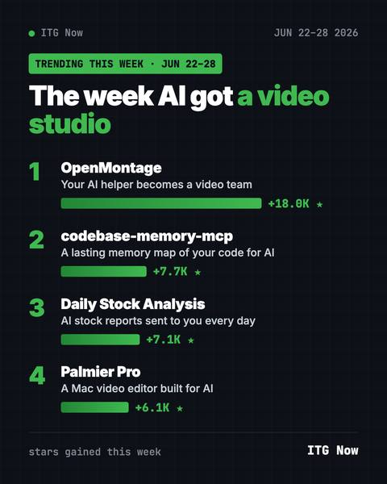
Most Starred GitHub Repos June 22-28, 2026
The most starred GitHub repos June 22-28, 2026: OpenMontage, codebase-memory-mcp, an AI stock report tool and the Palmier Pro video editor, explained simply.
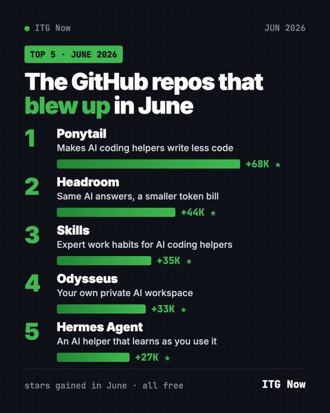
Best GitHub Repos of June 2026 (Free AI Tools)
The best GitHub repos of June 2026: 5 free tools that make AI helpers simpler, cheaper and smarter, plus a private AI workspace, explained simply.
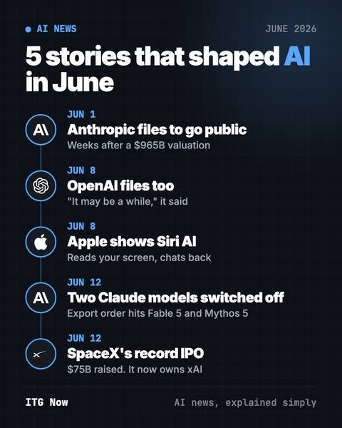
AI News June 2026: AI Labs Line Up for Wall Street
Anthropic and OpenAI file to go public, SpaceX has the biggest IPO ever, Apple shows Siri AI, and Washington switches off two Claude models.
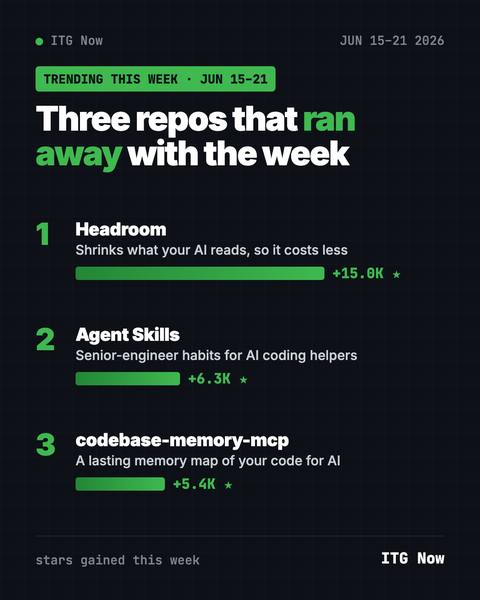
Trending GitHub Repositories June 15-21, 2026
The trending GitHub repositories June 15-21, 2026: Headroom tops the week, plus Agent Skills and codebase-memory-mcp, explained simply with setup steps.
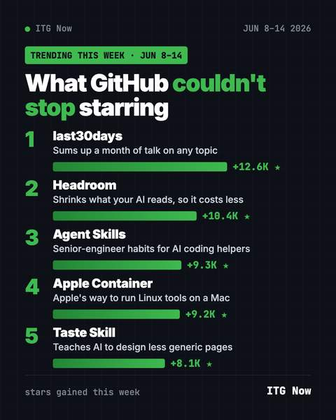
Top GitHub Repos the Week of June 8, 2026 (Explained)
The top GitHub repos the week of June 8, 2026: last30days, Headroom, Agent Skills, Apple Container and Taste Skill, with copy-paste setup for each.
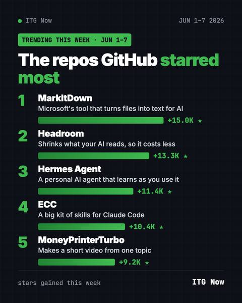
GitHub Trending June 1-7, 2026: MarkItDown Leads
GitHub trending June 1-7, 2026: Microsoft's MarkItDown, Headroom, Hermes Agent, ECC and MoneyPrinterTurbo, explained in plain words with setup steps.
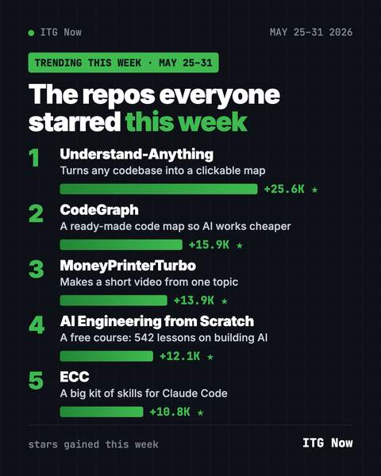
Trending GitHub Repos This Week: May 25-31, 2026
The trending GitHub repos the week of May 25, 2026: a code map, a cheaper AI helper, a topic-to-video maker, a free AI course and a Claude Code kit.
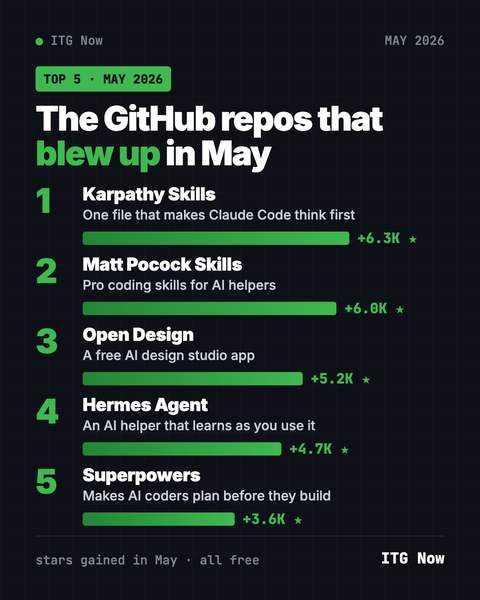
Best GitHub Repos of May 2026 (Free AI Tools)
The best GitHub repos May 2026 brought: Karpathy Skills, Matt Pocock's Skills, Open Design, Hermes Agent and Superpowers. Five free AI tools, explained simply.
AI News May 2026: Anthropic Passes OpenAI, Musk Loses
Anthropic rents Musk's data center and passes OpenAI in value, Musk loses his OpenAI suit, Google remakes search, and AI solves a math puzzle.
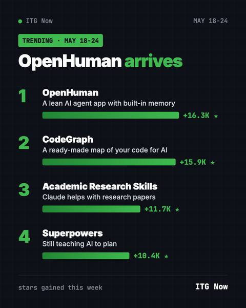
Trending GitHub Projects May 18 2026: OpenHuman and More
Trending GitHub projects May 18 2026: OpenHuman, CodeGraph, Academic Research Skills for Claude and Superpowers. What each does and how to start.
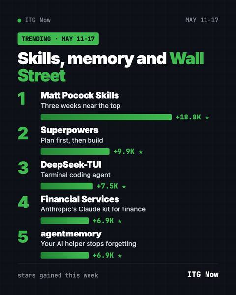
Popular GitHub Repos May 11 2026: Skills, Memory, Finance
Popular GitHub repos May 11 2026: Matt Pocock's skills, Superpowers, DeepSeek-TUI, Anthropic's Claude kit for finance and agentmemory, explained.
GitHub Trending May 4 2026: DeepSeek-TUI Leads the Week
GitHub trending May 4 2026: DeepSeek-TUI (now Codewhale), Matt Pocock's skills, Ruflo agent swarms, TradingAgents and Addy Osmani's Agent Skills.
Trending GitHub Repos April 27 2026: Skills Take Over
Trending GitHub repos April 27 2026: Matt Pocock's skills hit number one, plus Karpathy Skills, TradingAgents, GitNexus and a Codex skills list.
Best GitHub Repos of April 2026 (Free AI Tools)
The best GitHub repos April 2026 brought: Hermes Agent, Karpathy Skills, Awesome DESIGN.md, Career-Ops and Caveman. Five free AI tools, explained simply.
AI News April 2026: Mythos, GPT-5.5 and Meta Job Cuts
Anthropic holds back its Mythos model, OpenAI ships GPT-5.5, Meta cuts 8,000 jobs, and OpenAI rewrites its Microsoft deal.
Best GitHub Repos, Week of April 20 2026 (Free Picks)
Best GitHub repos week of April 20 2026: Karpathy Skills again, the free Fincept Terminal for market data, Multica, Matt Pocock's skills and Claude Context.
GitHub Trending This Week April 13 2026: Top 5 Repos
GitHub trending this week April 13 2026: a 44K-star rules file, Hermes Agent, claude-mem memory, MarkItDown and Multica. Free tools in plain words.
Trending GitHub Repositories April 6 2026: Hermes Wins
Trending GitHub repositories April 6 2026: Hermes Agent, Microsoft's MarkItDown, DeepTutor, Multica and the Karpathy rules file, explained simply.
Top GitHub Repos, Week of March 30 2026: 5 Free Tools
The top GitHub repos week of March 30 2026: a Claude Code guide, Codex add-ons, Microsoft's VibeVoice, a free demo recorder and Hermes Agent.
AI News Q1 2026: The 5 Stories That Changed Everything
Apple picks Gemini for Siri, SpaceX buys xAI, Anthropic and OpenAI raise record sums, and GPT-5.4 learns to use a computer.
Best GitHub Repos of Q1 2026: The 5 Biggest AI Tools
The best GitHub repos Q1 2026 produced: OpenClaw, Superpowers, ECC, OpenCode and The Agency. The five free AI tools that ruled January to March, explained.
GitHub Trending March 23 2026: ECC, DeerFlow and More
GitHub trending March 23 2026: ECC, ByteDance's DeerFlow, Superpowers and Project NOMAD, an offline library. Plain-English picks with setup lines.
Best GitHub Repos of March 2026 (Free AI Tools)
The best GitHub repos March 2026 brought: OpenClaw, ECC, The Agency, Superpowers and Paperclip. Five free tools for AI helpers and AI teams, explained simply.
AI News March 2026: OpenAI's $122B, Sora Ends, GPT-5.4
OpenAI launches GPT-5.4, shuts Sora and raises a record $122B, Nvidia sees $1T in chip orders, and a judge sides with Anthropic.
Trending GitHub Repos March 16 2026: 5 Free AI Picks
Trending GitHub repos March 16 2026: Superpowers, ECC, MiroFish, Learn Claude Code and OpenViking. What each free tool does and how to start.
Most Popular GitHub Repos, Week of March 9, 2026
Most popular GitHub repos week of March 9, 2026: The Agency, MiroFish, BitNet, DeerFlow and Hermes Agent, explained simply with setup lines.
GitHub Trending, Week of March 2, 2026: AIRI and More
GitHub trending week of March 2, 2026: AIRI the AI companion, OpenSandbox and GitNexus, explained simply, plus the one repo we chose to skip.
Fastest-Growing GitHub Repos: Week of Feb 23, 2026
Fastest-growing GitHub repos week of February 23, 2026: Superpowers, Hugging Face Skills, GitNexus and Context Engineering skills, explained.
Best GitHub Repos of February 2026 (Free AI Tools)
The best GitHub repos February 2026 brought: OpenClaw, nanobot, Superpowers, Anthropic's Skills and OpenCode. Five free AI tools, explained in plain words.
AI News February 2026: SpaceX-xAI, Claude, Pentagon
SpaceX buys xAI, Claude Opus 4.6 and Cowork shake software stocks, Anthropic raises $30B, and the Pentagon fights Anthropic.
Hottest GitHub Repos, Week of February 16, 2026
Hottest GitHub repos week of February 16, 2026: Zvec, Rowboat, gog, Summarize and Google's TimesFM, explained simply with setup lines.
Popular GitHub Repos, Week of February 9, 2026
Popular GitHub repos week of February 9, 2026: Google's LangExtract, Pi, Dexter, claude-mem and Monty, explained in plain English with setup.
Trending GitHub Projects, Week of February 2, 2026
Trending GitHub projects week of February 2, 2026: OpenClaw, claude-mem, Pi, OpenAI Skills and PageIndex, explained simply with copy-paste setup.
GitHub Trending Repos, Week of January 26, 2026
GitHub trending repos week of January 26, 2026: OpenClaw's record 120,800-star week, plus Remotion, PageIndex, MLX-Audio and memU, explained.
Best GitHub Repos of January 2026 (Free AI Tools)
The best GitHub repos January 2026 brought: OpenClaw, OpenCode, Anthropic's Skills, Superpowers and UI UX Pro Max. Five free AI tools, explained simply.
AI News January 2026: Siri, ChatGPT Ads and Health
Apple picks Gemini for Siri, Amazon cuts 16,000 jobs, two countries block Grok, ChatGPT gets a Health space and ads.
Most Starred GitHub Repos: Week of January 19, 2026
Most starred GitHub repos week of January 19, 2026: Superpowers, AionUi, Remotion, PageIndex and UltraRAG, with plain-English setup steps.
Top GitHub Repos, Week of January 12, 2026
Top GitHub repos week of January 12, 2026: OpenCode, Superpowers, Claude Code, Ralph and UI-TARS Desktop, explained in plain words with setup.
Trending GitHub Repos, Week of January 5, 2026
Trending GitHub repos week of January 5, 2026: OpenCode, Claude Code, Memos, Vibe Kanban and Superpowers, explained simply with setup steps.
FAQ
What are the best free AI tools for beginners?
Handy for voice typing, Colibri for a private AI chat, OpenClaw for an assistant in your chat apps and Tolaria for notes. All four are free and open source.
Can I run AI on my own computer for free?
Yes. Colibri runs AI models on a normal processor with no graphics card, starting at 8 GB of memory. The model stays on your machine.
Are free AI tools safe to use?
Use the official GitHub page or the link in our guide, read the permissions it asks for and check the license. The tools above are open source, so anyone can read their code.
Other fields
- 102 articlesAI for Developers
- 45 articlesAI for Business
- 21 articlesAI for Creators
- 20 articlesAI for Marketing
- 14 articlesAI for Finance
- 13 articlesAI for Students
- 12 articlesAI for Government & Law
- 10 articlesAI for Jobs & Careers
- 9 articlesAI for Media
- 8 articlesAI for Design
- 8 articlesAI for Education
- 4 articlesAI for Healthcare
- 1 articlesAI for Engineers